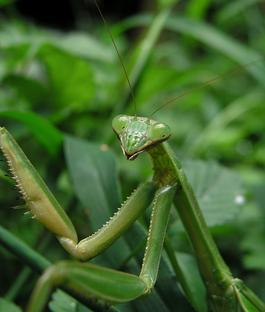

Богомо́ловые (лат. Mantodea, Mantoptera) — отряд насекомых с неполным превращением. Включает более 2800 видов (2853 вида по состоянию на февраль 2008 года).
Преимущественно крупные насекомые с удлинённым телом, но встречаются и исключения. Длина тела до 11 см. Голова треугольная, с большими глазами, очень подвижная. Ротовые органы направлены вниз. Переднеспинка обычно не прикрывает голову, но имеет расширение в верхней трети. Общая черта всех богомолов — специализированные передние ноги, предназначенные для хватания и удерживания добычи. В покое они находятся в сложенном состоянии, при этом голень вкладывается в желобок на бедре, подобно перочинному ножу. Бедро и голень имеют ряды острых шипов. У части видов передние ноги используются и для передвижения. Брюшко довольно уплощено, несёт на конце хорошо развитые членистые церки и по внутреннему строению очень похоже на брюшко тараканов. Крылья, передние и задние, очень хорошо развиты и благодаря им богомолы могут совершать значительные перелёты. Но существуют и бескрылые виды.
Богомолы ведут хищный образ жизни, питаются обычно другими насекомыми, включая и мух; крупные также охотятся на маленьких ящериц, лягушек, птиц и даже грызунов.
Богомолы являются мастерами камуфляжа и используют защитную окраску, чтобы гармонировать с листвой, избегать хищников и для ловли жертв в ловушку. Некоторые виды из Африки и Австралии способны изменить окрас на чёрный после пожара, чтобы гармонировать с разорённым пейзажем. В дополнение к этой адаптации они приспособились не только смешиваться с листвой, но и подражать ей, притворяясь листьями, стеблями травы или даже косточками. Богомолы семейства Metallyticidae выделяются из всех других своей яркой сине-зелёной окраской с металлическим блеском.
При нападении врага или встрече с соперником богомолы сначала принимают устрашающую позу: крылья расправлены веером, передние хватающие лапы направлены вперёд, конец брюшка задран кверху. Если это не действует, насекомые бросаются в бой. Если противник гораздо сильнее — они предпочитают улететь подальше. Но если преимущество на их стороне, то они выходят из схватки победителями.
Богомолы — насекомые с достаточно хорошим зрением, и они замечают любое волнение, производимое в лаборатории или на воле, в том числе яркий свет или перемещающихся учёных. Кроме того, богомолы — единственные из всех насекомых могут заглянуть себе за спину.